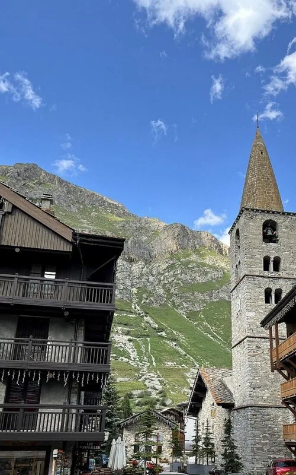
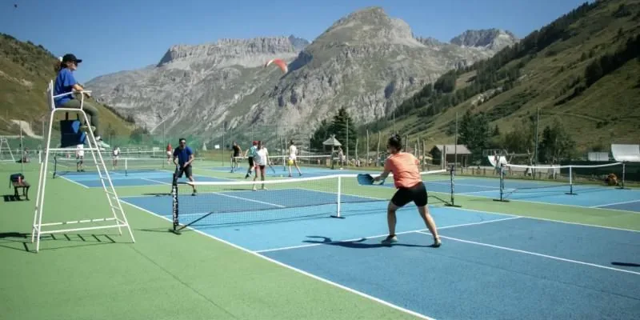
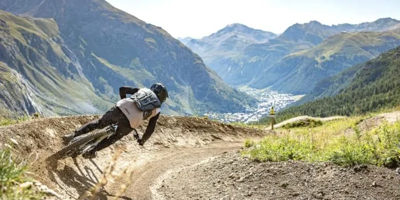

La station
Un vrai village de montagne
Maisons de pierre et de bois, balcons fleuris, terrasses au soleil : l'été, Val d'Isère retrouve son allure de village savoyard. Le centre aquasportif et le parc des sports du Manchet réunissent piscine, escalade, tennis et terrains de sport, Sur place, tout se fait à pied, et des bus gratuits desservent toute la station.
Découvrir le village sur valdisere.com

